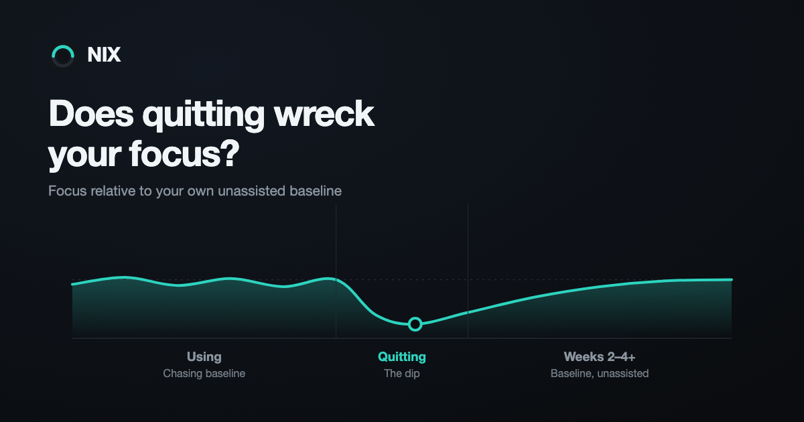

Does quitting nicotine wreck your focus?

Yes, temporarily. Difficulty concentrating is one of seven symptoms that a review screening more than 3,500 papers on tobacco abstinence identified as a genuine withdrawal effect rather than folklore, and across it they peaks within the first week and lasts two to four weeks.⁸ The more useful question is the one most pages skip: how big is the thing you're protecting? The measured numbers are smaller than the fear — and the evidence stops well short of where the reassuring version of this article usually takes it.
What a pouch is actually doing to your attention
Start with the strongest evidence that nicotine does anything at all. A 2010 meta-analysis pooled 41 double-blind, placebo-controlled studies across nine performance domains and found significant effects in six: fine motor control (g = 0.16), alerting attention for both accuracy and response time (0.34), orienting attention response time (0.30), short-term episodic memory accuracy (0.44), and working-memory response time (0.34).²
Those are small-to-medium effects, and the design detail matters more than the sizes do. The authors restricted inclusion to non-smokers, non-deprived smokers, and smokers deprived less than two hours — specifically so that withdrawal relief could not explain the result. Their conclusion was that the effects on motor abilities, attention and memory "likely represent true performance enhancement because they are not confounded by withdrawal relief."² So the flat claim that nicotine does nothing but patch a hole it dug is wrong. It does something real. It is just not large, and it is measured in reaction times rather than in whether you finish the document.
One caveat, stated once, that applies to everything below: none of this was run on pouches. In that meta-analysis gum was the single most common delivery method at 33% of studies, then patch at 29% and cigarettes at 19%, with spray, inhaler and injection making up the rest.² Gum is the closest available analogue to a pouch — same oral-mucosal route, same slow rise instead of an inhaled spike — but an analogue is not a match. Every other study cited on this page used cigarette smokers. Nobody has run any of it on a pouch user.
The other half of it, which is also real
Chronic nicotine changes the density and sensitivity of the nicotinic receptors in your brain — upregulation. Your brain builds more receptor sites to keep pace with a steady supply, and those receptors undergo slow state changes that don't reverse in minutes; the mechanism work puts those changes on the order of hours to days.³ Between doses, a system built around a steady supply is running short of one.
That's where the "your edge is really a debt" reading comes from, and it holds — narrowly. A 2018 review of the cognitive literature notes that nicotine improved working-memory performance in abstinent smokers, while the same improvement in non-smokers was not observed.⁴ But the same review declines to settle the mechanism, stating that "it is not clear whether these cognitive-enhancing effects were primary manifestations of relief from withdrawal states rather than direct cognitive enhancement."⁴
So two things are going on — a modest genuine effect, and the reversal of a deficit the habit itself creates — and the literature does not currently tell you the split. What it does bound is the size of both. Nothing in this data set looks like a different brain.
This doesn't mean the discomfort is fake. The deficit during abstinence is real while it lasts, and it shows up on cognitive tests rather than only in how you feel. It means the thing you're protecting by not stopping is smaller than it looks from inside a craving.
What the dip looks like at your desk
The cleanest picture of that abstinence deficit comes from a study that put 15 smokers and 22 non-smokers through the N-back — a standard test of holding and updating several items under time pressure. Tested after at least 13 hours without a cigarette, smokers made significantly more errors than non-smokers and were slower than they themselves had been on a day they'd smoked normally. Tested within an hour of smoking, the difference from non-smokers was no longer statistically detectable.⁵
Read that last sentence carefully, because it is easy to oversell. With 15 people against 22 and no equivalence test, failing to find a difference is not the same as showing there isn't one. What it supports is narrower and still useful: the deficit tracked the abstinence window rather than being a fixed property of being a smoker.
Mapping a lab task onto your calendar is inference, not a finding — no study cited here compared drafting a document to sitting in a meeting. But what the N-back models is precisely holding several things in mind while updating them, so work with that shape is where the mechanism predicts you'd notice it first: a proposal draft, a non-obvious bug, a negotiation where the terms keep moving. That's the work worth moving off day three, and the withdrawal timeline covers the hour-by-hour version of when day three actually lands.
Craving is its own attention tax, separate from the dip
There's a second cost that's easy to miss because it doesn't feel like a concentration problem — it feels like distraction. A week-long study tracked 119 smokers through their first week of a quit attempt, prompting them at random points during the day to rate their craving and complete a timed reaction test where smoking-related words were mixed in with neutral ones. People who ran higher craving overall through the week were measurably slower to respond around the smoking-related words specifically — their attention was being pulled toward cue-related thoughts, not just running low on focus in general.⁷ The effect size was modest, but it was consistent, and it's a different mechanism from the working-memory deficit above: one is your processing capacity running low, the other is that capacity getting hijacked by intrusive thoughts about the thing you're not doing.
The same study found this was mainly a between-person pattern rather than a moment-to-moment one — the people who were generally craving more across the week showed more of this pull, but a single spike in the moment didn't reliably predict more distraction in that instant.⁷ Practically, that means the "wait five minutes for the wave to pass" advice for a single craving is sound, but it doesn't erase the cumulative tax of a genuinely hard week. If cravings are running high all week, expect background distraction all week, not just during the peaks — which is another argument for keeping that week's total workload light rather than just white-knuckling the worst hours.
Two timelines, and they don't match
The symptom first. The National Cancer Institute puts withdrawal at its worst during the first week, peaking in the first three days, with intensity dropping over the first month — while noting that some people report symptoms for several months.¹ The abstinence review lands in the same place: difficulty concentrating peaks within the first week and lasts two to four weeks.⁸ Both of those are symptom reports. That review deliberately set performance testing aside as a separate question it wasn't evaluating.⁸
The biology runs longer. A SPECT imaging study scanned 19 smokers repeatedly across a quit attempt — at one day, one week, two weeks, four weeks, and six to twelve weeks — against 20 age-matched non-smokers. Receptor availability was higher than the non-smokers' at one week, still elevated at four weeks, and no different from non-smoker levels by six to twelve weeks.⁹ The 2018 review puts the same recovery range at three to twelve weeks.⁴
That imaging study is the only measurement on this page taken on people weeks into staying quit, which is worth knowing about this literature in general. Be careful what you take from it: receptor availability is not a cognitive score, and nobody has shown the two curves track each other. It is a reason not to treat week three as a finish line, not a prediction about how you'll perform in week three. And none of this is a fixed schedule — how much you used, for how long, and how consistently all shape how sharp the dip is.
Does it come back better, or just come back?
Straight answer: nobody has run the study that would tell you. It would require measuring your cognition before you were dependent, and no one did.
The nearest available evidence is cross-sectional, and it doesn't flatter the reassuring version. A study comparing 14 smokers, 15 ex-smokers and 9 never-smokers found working-memory performance tracked smoking history — smokers performed worst, never-smokers best, ex-smokers in between.¹⁰ The authors were careful about what that can mean: such trait-like differences "may be either long-term effects or etiological factors related to smoking."¹⁰ That design cannot separate damage from predisposition — whether smoking cost those people the difference, or the difference was part of what made them smokers.
It also transfers badly. Those were cigarette smokers, and whatever share of a long-term smoker's cognitive profile comes from decades of combustion is not obviously on a pouch user's ledger. Nobody has measured what is.
So the supportable claim is narrower than the one you want, and it's still worth having. The measured deficit is tied to the abstinence window, and it closes. The acute advantage it was offsetting was small to begin with. What your ceiling looks like a year out is genuinely unmeasured — and anyone selling you certainty about that, in either direction, is ahead of the evidence.
What actually protects your output while you quit
Nothing exotic, and nothing that requires believing the dip won't happen:
- Don't schedule the start during your highest cognitive-load week. The published shape is worst in the first three days, easing across the month.¹ If a deadline or a negotiation is immovable this week, this is not the week to also be on day three.
- Protect sleep specifically. Insomnia sits on the same validated list of abstinence symptoms as difficulty concentrating.⁸ The practical case for treating it as a priority: when you're tired you're less resilient, and more likely to slip.⁶
- Front-load work that requires holding state. The first hours of the day, before fatigue and craving have had time to compound.
- Expect the dip instead of interrogating it. A slower afternoon on day three is the documented pattern, not evidence that something has gone wrong.
If you're weighing whether to taper instead of stopping outright specifically to soften this window, that's a real strategy — see the taper approach and how Craving SOS handles the five-minute waves that show up during the peak.
NIX builds the taper around your logged habit, not a generic schedule. A pace your working week can actually absorb, plus craving support built for the five minutes that matter most.
Sources
- National Cancer Institute. Tips for Coping with Nicotine Withdrawal and Triggers. cancer.gov
- Heishman SJ, Kleykamp BA, Singleton EG. Meta-analysis of the acute effects of nicotine and smoking on human performance. Psychopharmacology, 2010. PMC3151730
- Govind AP, Vezina P, Green WN. Nicotine-induced Upregulation of Nicotinic Receptors: Underlying Mechanisms and Relevance to Nicotine Addiction. Biochemical Pharmacology, 2009. PMC2728164
- Valentine G, Sofuoglu M. Cognitive Effects of Nicotine: Recent Progress. Current Neuropharmacology, 2018. PMC6018192
- Mendrek A, Monterosso J, Simon SL, et al. Working memory in cigarette smokers: Comparison to non-smokers and effects of abstinence. Addictive Behaviors, 2005. PMC2773651
- National Cancer Institute / Smokefree.gov. Managing Nicotine Withdrawal. smokefree.gov
- Waters AJ, Szeto EH, Wetter DW, Cinciripini PM, Robinson JD, Li Y. Cognition and Craving During Smoking Cessation: An Ecological Momentary Assessment Study. Nicotine & Tobacco Research, 2013. PMC3977632
- Hughes JR. Effects of abstinence from tobacco: valid symptoms and time course. Nicotine & Tobacco Research, 2007. PubMed 17365764
- Cosgrove KP, Batis J, Bois F, et al. β2-Nicotinic acetylcholine receptor availability during acute and prolonged abstinence from tobacco smoking. Archives of General Psychiatry, 2009. PubMed 19487632
- Ernst M, Heishman SJ, Spurgeon L, London ED. Smoking history and nicotine effects on cognitive performance. Neuropsychopharmacology, 2001. PubMed 11522460